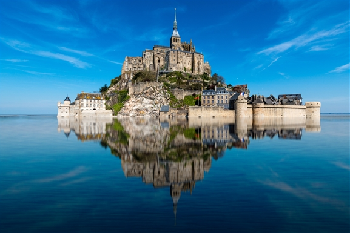
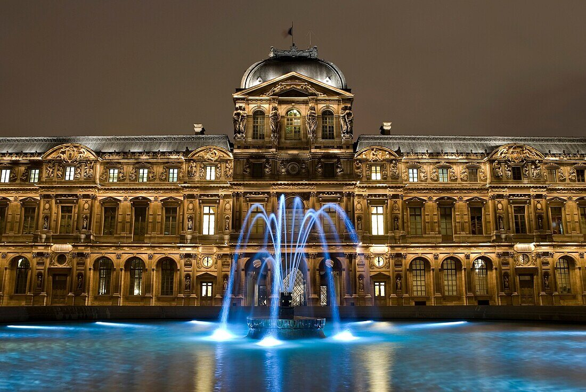
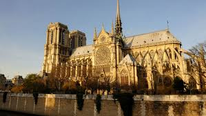
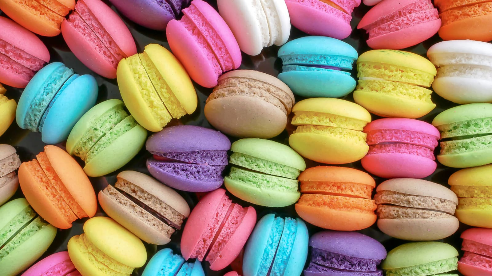
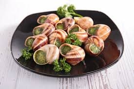

Monuments
France is home to some of the world’s most iconic landmarks — from the Eiffel Tower to ancient cathedrals and royal palaces.
Each monument carries a story, a piece of history that shaped the nation. Explore the beauty, culture, and timeless architecture
that make France unforgettable.
SHOW MORE




Food
French cuisine is known for its rich flavors, elegant techniques, and timeless traditions. From warm buttery croissants to
delicate pastries and world-famous cheeses, every dish carries a piece of France’s culture. Discover the tastes that shaped
French history and continue to inspire.
SHOW MORE


Fun-Facts
France is the most visited country in the world, welcoming over 80 million tourists every year.
Croissants didn't originate in France, they actually come from Austria, but the French made them famous.
France has over 1,200 types of cheese, meaning you could try a new one every day for over three years.
The Louvre is the largest art museum in the world, holding around 35,000 works of art.
French was once the official language of England for almost 300 years.